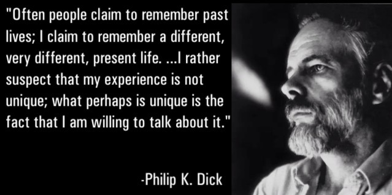
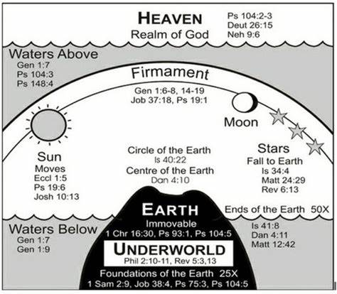
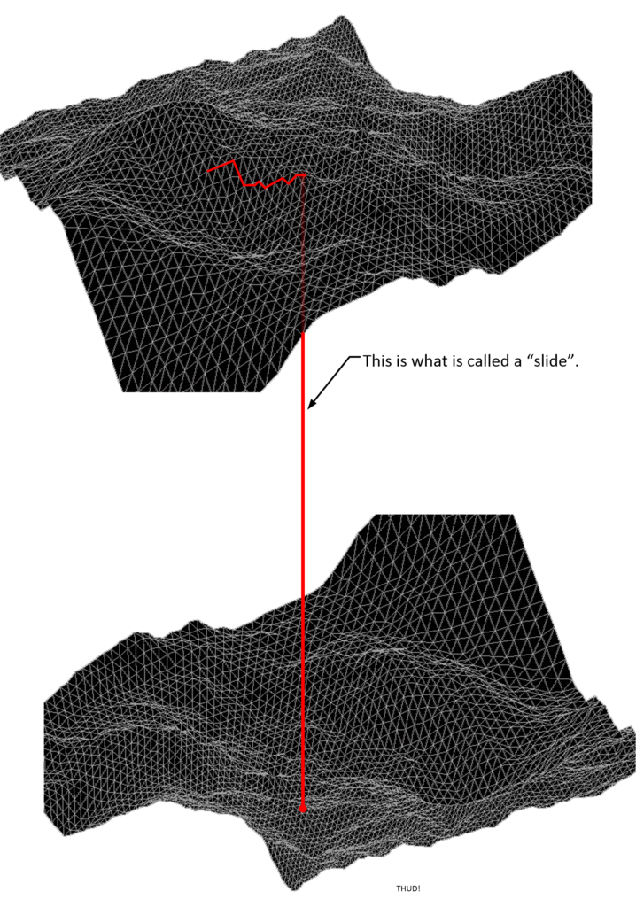
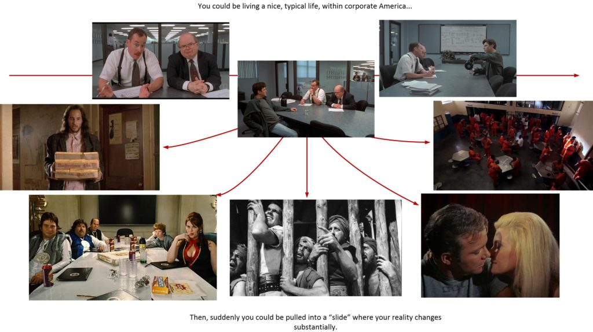

This article travels into details on how the multi-world “theory” operates upon the canvas of a universal reality. We look at the moment-by-moment method of how we exist within the multi-world universe. (In other words.) We look at the mechanism in detail.
Of course, it is going to be an awfully strange “trip”. As our actual reality does not resemble anything like everyone assumes it is.
Of course, this is from the point of view of an "operator". (If you want to eject the MAJestic mantle and look in the fascinating world of the mathematics behind all this, please by my guest.)
Here, we discuss the mechanism from which a soul would choose to live a particular life as a human. Yeah. I get it, it’s a very deep subject. It enters the realm of the religious and the spiritual. But, you know what, it need not be.
When you look at things objectively, you see that things HAVE to be this way, as described.

The topographic model.
We discuss this MWI as a topographic mapped surface from which we can extrapolate probability potential.
Now, there are many, many ways to illustrate the MWI. This is only one such method. It is the method that I was introduced to, and the one that I have come to accept as “normal”.
One of the most radical and important ideas in the history of physics came from an unknown graduate student who wrote only one paper, got into arguments with physicists across the Atlantic as well as his own advisor, and left academia after graduating without even applying for a job as a professor. Hugh Everett’s insight was as simple as it was brilliant: accept the Schrödinger equation. Both of those parts of the final superposition are actually there. But they can’t interact with each other; what happens in one branch has no effect on what happens in the other. They should be thought of as separate, equally real worlds. This is the secret to Everettian quantum mechanics. -Aeon
This method or display is something that is often “behind the scenes” when the pilot arranges a slide, and the calibration of destination coordinates are locked in.
I suppose most people can live without it.
However, in my case, I discovered that it was useful to determine just how “far out” a slide can manifest, and whether or not a “deep dive” will manifest. (I said “useful”, not necessary.)
As far as any kind of practical application, I would hazard a guess that there wouldn’t be any need to anyone to know about this. It’s just a useful way of better understanding how the MWI works.
Warning
The idea of multiple-world lines, the MWI and the physics of this entire matter is NOT accepted by the general pubic, or (even) agreed to by many physicists. To them it is unproven theory that doesn’t make sense in the Judaeo-Christrian world-view.
- Is the Many Worlds hypothesis just a fantasy?
- Do MWI and String theory conflict?
- Refuting the Many Worlds Interpretation (MWI)
- Why the Many-Worlds Interpretation Has Many Problems
But, seriously folks. You do not have to believe anything. It’s your reality. That’s fine.
Now, for the “fresh slap of reality”.
The organization that I was part of from May 1981 through to May 2006 utilized technologies based upon this “theory”. Our government built machinery based on this “theory”. As well as using the machines (so constructed) for their own purposes.
I can positively affirm that the technologies and the machinery worked.
By the time I started to use the more primitive versions of the machinery (May 1981), it was well understood that the technology was very, very mature.
I refer to the "primitive" version to be a fixed transport portal. In this narrative, and post, I discuss my role as a "dimensional anchor" using a much more advanced version of technology. In many ways, it's sort of explaining how a microwave works to a snail. Most of what I have to say will be gibberish to most readers who have absolutely no reference points to anchor upon.
I was an “operator” of numerous such technologies.
This is my overview of how the MWI actually manifests from the point of view of an “operator” or a “participant” utilizing the MWI-based technologies. It is based on [1] my extrapolation of experiences, [2] knowledge and [3] my exposure to various types of advanced technology.
If you do not want to hear what I have to say, you can leave.

Quick Overview
Before we begin, here’s a quick review for all of you guys who just fell onto this post from out of the “blue”.
Most people have a really crap-tastic idea of what the MWI or multiple world-line theory is. They just cannot visualize it for the life of themselves. They have no idea what to think, or how it would manifest.
They come up with visualizations such as this…

One major hurtle…
The problem with all these contemporaneous visualizations is that the artist, philosopher, or scientist does not isolate the concept of consciousness from that of a physical person. It is assumed, and defaulted to one and the same identical thing. When in fact, they are entirely two separate things.
Everyone assumes that all those people around us also possess a consciousness. We assume they are also like us; that they have an active consciousness and an associated soul as well. We make this assumption based on our interactions with them. They appear, to us to be fully actuated and in possession of a soul and consciousness. We argue here that the appearance of something does not equate to the de facto possession of something.
There are differences between [1] a “consciousness”, [2] a “physical body”, and [3] a “person”. For our purposes, a person is someone with an active consciousness. Most people think that all three things are just different names for the same thing. They are not.

Most laymen, and many scientists do not understand this simple fact. They assume that everyone is a “person”. That we share our universe with other people who all have internal “consciousnesses”.
We do not.
We are a consciousness. Not a physical body.
Instead we are consciousness, that inhabits a physical body, forming a person. (As in the picture above.) We then occupy a reality.
In this reality, we are surrounded with physical bodies, but none of them possess a consciousness. Instead they appear to have a consciousness simply because of how they interact with us. This interaction of these others is how the soul obtains experiences and thus grows and advances in the quantum sphere.

Thus, our universe is comprised with a near infinite number of world-line realities. Many are empty, and some contain a consciousness which is inhabiting a body to obtain experiences with. Our universe, thus looks something a little like this…

Why this is important.
If you want to know the “secrets of the universe” then you will need to forget everything you learned in school and college. For all of it is based on assumptions that are rock-hard, firm, fixed and imputable.
Most of it is really, really incorrect. For our “reality” is not what everyone thinks.
- We do not “share” our universe with others.
- We live alone in our universe.
- Everyone else are “shadow copies” of their true forms.
- These “shadow copies” are other people acting and living as if they were to share our universe. They are what could possibly exist and manifest. Not that they actually do manifest.
What it looks like is NOT the way it is.
We all think that there is just one universe, and one Earth, and it is populated by all of us together. That we share the earth with each other and that we are all equal and are in the same time-line.
All these assumptions are wrong.

We do not share our universe with others.
Nope.
Not. Even. Close.
Instead, we occupy a universe alone. We do not share it with anyone. Oh, yes, it does appear that we share it, but we really do not.
All those other people that we interact with are not really what they appear. They are a version of that other person. This is the version of that person were they to actually share the reality with us.

They are but quantum shadows of the possibility of interaction.
In Plato’s classic Allegory of the Cave, a group of people living in a cave have a very false view of the world because the only thing they can see is the shadows on a wall. Plato was trying to teach his students that the philosopher must see beyond the shadows to the reality that is projecting them, but what exactly is that reality. The reality that Plato wanted his students to see is not the physical form of the object casting the shadow, those physical objects are just another level of shadows! The world of matter is the shadow world, the world of illusion, the world of deception. It is not at all what it appears to be because our physical eyes, and other physical senses, can sense only the shadows called matter so we are deceived into believing that it is real. That is not to say that matter is not real. Matter is real just as the shadow of a tree is real, but the shadow is not the tree and matter is not true reality. -Cosolargy International
To understand this please note.
We are not a physical body. We are soul.
Now, do not be offended.
This does not at all mean that there is no love, that there isn’t a thing called togetherness. That there isn’t all the physical, emotional and spiritual relationships that we have with others. Do not be silly. Of course they exist.
What changes is the understanding of what a physical body is.

Instead of one (and only one) physical body that your consciousness inhabits, there is an infinite number of physical bodies. Each one within a unique and separate world-line.
You, as consciousness, moves in and out of all these other bodies of yours through thought.

This is also true for the entire rest of the universe. Everyone else also possesses bodies such as this. Your dog has this kind of body. Your cat has this kind of body. In fact, the felines are actually quite cognizant of this ability.
We are NOT a physical body. We are soul that manifests a consciousness within our reality.
Knowing and realizing this, makes some of the passages in the religious books far more reasonable, and easier to understand. It doesn’t matter if it is the Koran, or the Bible. Understanding the way the universe works, and truly works, adds a far greater understanding to the wisdom that resides inside of these great works.
The soul creates a “consciousness” that it places in a “container”. This container is a “world-line”. Our “universe” is a near infinite number of world-lines.

We are placed here for our consciousness to obtain experiences.
We navigate in and out of the world-lines though our thoughts. Our rate of travel (in general) is (for most humans) about 4 Hz. Or, four cycles per second. (Four world-lines each second.)
There are different rates of travel, and different species travel the MWI at different speeds. In general, the rate of travel is proportional to the operational speed of the brain. This of course varies. If you dull your brain to such a degree that your brain is slower, then you will not travel the MWI as fast as others would. And you might find your life slowly "falling behind" that of others.
Thus…
- We are consciousness. We “rent” a physical body for a fleeting moment of time.
- Our reality is NOT shared. Instead our consciousness occupies a singular world-line. It is a momentary event.
- We (our consciousness) migrate between momentary world-lines through our thoughts.
- This movement is known as “the arrow of time”.
The best way that I can introduce the reader to this “radical” understanding of how our universe actually works, is to use the “movie projector theory”.
Movie Projector theory for the MWI.

Thus, the idea of the actual way things work is really, really, REALLY different than what everyone assumes or believes. The difference is so stark, that many researchers are handicapped in their understanding of reality. Ah, but it need not be that way.
Come on! You can well understand the movie projector analogy, can’t you?
If you can, well good for you! Award yourself a gold star.
The Movie Projector Theory in more detail…
The problem with that analogy (and it is a really good analogy), that that it does not take into account the individual frame selection in the film role. For in actual contemporaneous movies, it is the movie producer that selects the individual frames, and the person just sits back and watches the movie.
In reality, it is more like an entire bank of projectors, and we (as soul) selects the movie that interests us.
In this model, we have numerous movie projectors, all running simultaneously (at the same entropy)… Ah! At the same time.
We can “jump into” any scene portrayed by any of the movie projectors at will. We just look at the projected images.

The further away the movie projector is from us, the harder it is to watch that movie. So we must watch closer movies (momentarily) and then “edge our way” closer to the movie projector that we are interested in.
Most people, sadly, do not do this. They allow the movie projectors to operate randomly and they find themselves watching movies that they may not really care for.
How it manifests
So, using this film / movie projector analogy further it is exactly how our consciousness selects the “life experience” that we obtain. Each frame in a given movie reel is a world line. They are all playing about simultaneously, and our consciousness selects the world-lines to occupy by hopping from frame to frame. (World-line to world-line.)

Nearby movie projectors are nearly identical to the one that we are viewing at the moment. Their divergence from our “present reality” is often very small.
As we move further and further away to more distant movie projectors the divergence gets larger and larger and larger.
This is why it doesn’t seem like we are moving from one world-line to the next. It seems smooth, seamless and transparent. That is because the deviance in nearby world-line (projectors) is very, very small.
Our thoughts select the world-line…
In reality, the “film spool” (a collection of “frames”) is known as the “life experience” of a given consciousness as it takes on a life.
It is a record of our travels in and out of different world-lines. Where a “world-line” is represented as a frame within the movie reel.
The individual “frames” that are selected, are chosen by the thoughts of the consciousness that inhabits the body. We migrate to things that we think about. We migrate to what we think about.
Not necessarily what we might desire. It is what occupies our thoughts most of the time. (So shut off that stupid manipulative television, why don’t ya!)
For all its popularity, Facebook isn’t without its share of scandals. In the latest one, details came out of an experiment conducted on 700,000 Facebook users over the period of a single week in 2012. News feeds were manipulated to contain positive or negative news and content, then users were monitored to see if the change made them use more positive or negative words in their status updates. And it worked—people’s status updates showed a change in emotion that went along with the kind of news that they were exposed to. The term used was “emotional contagion,” and it confirms something pretty frightening. According to the study, people don’t even have to be physically around another person in a bad mood to absorb the negativity into themselves—negativity can be “caught” just from looking at a computer screen. There doesn’t need to be a personal, emotional connection for emotional contagion to happen. Not surprisingly, the study has brought up a number of disturbing questions, and it’s now being investigated by organizations like the Information Commissioner’s Office in Dublin. Those questioning the ethics of the study state that it’s nothing less than psychological manipulation. As if that’s not shady enough, Facebook users were unaware that they were having their emotions and moods manipulated through another party controlling just what was popping up in their news feeds. -List verse

No two thoughts are the same…
One of the problems that people need to come to grips with is that thoughts are not equal. Thoughts are “weighed”. Each thought is different. And thus each thought has a different degree in influence in world-line selection.

Thoughts and emotions together form a complex stew of “influence” that can absolutely affect your world-line travel adventures.
These thoughts are comprised of “levels of influence”.
- Duration of thinking about something.
- Emotional attachments with the thoughts.
- Prior memories of similar events.
- Prior physical experiences.
- The thoughts of the people (shadow consciousnesses) around you.
- Cultural variances, needs and desires.
- Mass thought manipulation (Have you been paying attention to the news lately?)
- One’s inherent belief system.
Ah, no two thoughts are equal. They have a “weighed” value or influence factor. Further, they are also modified by other thoughts by other “shadow consciousnesses” (Individual proxy consciousnesses that share a given reality.)
Think about it. It has to be this way, or else an obsessed person should be able to have their dreams manifest quite easily. But, the truth is that they don't. That is because of a slew of factors. One of which is the "level of influence" that a thought is given within a given world-line.
One of the most important and significant factors in thought-directed world-line selection is one’s inherent belief system.
Consider the cow.

Let's use the cow analogy. For instance, you might be starving, and ready to die of starvation. A typical American would not have any qualms with butchering a cow and eating steak. A Hindu would not, and would rather die than kill a cow. A vegetarian might be against eating it, but would not have any qualms drinking it's milk. Our actions are determined, in large part, by our belief systems.
It is our deepest belief systems that have the greatest influences in our thoughts.

This is a very important subject, and I will cover it later on. For now, let’s look at things simply. Consider that all thoughts are simple, unique and they can easily select the “frames” or world-lines that the consciousness will migrate to.
The actual “landscape” of the MWI as viewed by the individual consciousness.
Imagine a “road map” of nearby world-lines.
Now, what would it look like? What would it resemble? How would we be able to take into account all the different variables that are constantly shifting and changing all around us?
Obviously, it would have a form of sorts.
It would have (as an illustration) globes representing a given “world-line” (or “frame” in the movie using the analogy above). It would also have lines. The lines would represent a path of migration. Which is the most probable paths for a consciousness to take when moving from one world-line to another.

Now, this is a pretty good analogy as far as it describes the path that a consciousness would take. However, this analogy ignores the world-lines that are not taken. And in general, there a millions or much larger numbers of world-lines that are constantly ignored.
So a better way of mapping this procedure is to do so in a three dimensional framework.
Moving away from the movie projector analogy and mapping it upon a three-dimensional grip, it might look something a little like this. With the positions of the world-lines geographically positioned relatively to the pathways as a function of the intrinsic value of the particular world-line.

However, it would not look so much like a cluster of grapes, or bubbles on a foamy sea of bath water. No.
It turns out that the highest probability pathway forms a kind of sheet or flat surface when plotted in the three dimensions. If you end up plotting everything, you can't make out heads or tails of the map. It's just this one big mess. But, if you plot the pathways that have the greatest probability of travel, it simplifies immensely.
Instead of a cluster of grapes, it would look a little like a mesh or a grid. With the points being world-lines, and the lines connecting the points as the shortest distance to that world-line.
Now, if you take a step away from this “map” of “world-lines” and their lines of “high-probability” consciousness transfer it might start looking a little like this. Where you would see a “surface” of “highest probability” pathways, with the relative ease of travel and the strength of character needed to traverse affecting the heights and valleys of the apparent surface.

The “surface” that this map forms is the HIGHEST PROBABILITY of consciousness movement from one world-line node to another.
- Going above the surface indicates a strength of will over the combined strength of inertia of a given world-line.
- Going below the surface indicates a weak strength of will and a consciousness being overwhelmed by the inherent inertia of a given world-line.
Additionally…
- Moving to the left upon the mapped surface indicates more freedom of movement upon a given world-line reality.
- Moving to the right upon the mapped surface indicates less freedom of movement upon a given world-line reality.
Thus…
The topographic map display is a useful tool in understanding the hurtles and trials that one needs to endure to travel forth on the MWI.

However, the rate of travel is fast…
The thing is, however, that the rate of travel through each world-line in the MWI is quite fast. It is around four world-lines per second. (For some people it is much, much higher.) Thus, for any topographic map to be of any use, it will have to have to exist on a much larger scale than what is presented here.
As such, the individual world-lines would appear as tiny pixels, and for the map to be of any use, it should describe a travel duration in terms of weeks rather than seconds. This means that the map would look like a smooth gradient rather than an array of “floating”globes.

Mapping the surface.
Here, we are going to take a look at the way the landscape actually looks from the point of view of an individual consciousness. It is NOT simple and flat. It is undulating with all sorts of “nearby” world-lines that the thoughts can select and migrate towards.
In general, it might look something along these lines…

In reality, this topographical map is much more complex and complicated. However, I was able to (functionally) navigate it using a sort of simple 3d understanding, and that understanding is one that I will provide here. Yes, these are my conventions distilled and illustrated as a teaching aide.
Here we look at it is the substantially simplified version that I am accustomed to using.

Now because this is a very simplified diagrammatic representation, numerous variables are incorporated in the “X’ and “Z” axes. (Not to mention the entropy axis “Y”.) In general, as I understand it, the characteristics of the “X’ and “Y” axes are an algebraic sum of the inverses of the individual contributions to the axes elements.
OK. I know that I lost you. Just think of it as a sum average of all your thoughts.
Internal Influences
Internal influences should be understood as the ultimate result of comparative thought-driven MWI transitions by the given consciousness.
Suppose the mind has a wide selection of thoughts. Everything from anger at a spouse, to frustration at work, and influences in the news, to a loving thoughts related to romance. All these thoughts will work together to generate a (singular) "value" on this axis. But, it is more than that. It is also the weighed value and the intensity of the thoughts, coupled with the apparent carry-over duration longevity of the thoughts as a person migrates in and through the other world-lines. Let's keep it simple. Look, if you drop a slice of pizza in the middle of a muddy road, would you [1] pick it up, wipe the mud off the pizza, and eat it. or [2] say "heck with that", and leave the pizza in the mud as a lost cause. For most people, they would give up and abandon the slice of pizza. The amount of mud is far too distracting to enjoy the slice of pizza. That is that way this system works. For if you abandon the slice, like most people would, your would occupy a world-line on the surface of the undulating map. If however, against all probability and convention, you decided to eat the slice, you might be above or below the surface, depending on other factors.
Here’s an example.
Let’s suppose that you are a simple fellow and you have five things going on in your life.
- A spouse that wants a divorce.
- A boss who is hinting on firing you.
- A yearning for a club sandwich and an ice cold beer.
- A pet that loves you and is very loyal.
- Memories of fishing with your father.
In this example, some of the items would have more emotion attached to it that others. While other issues might be better at controlling your emotions and directing your thoughts. While still others might be able to erase the thoughts completely (if for a short period of time).
You might be an emotional wreck and your thoughts would manifest a life that would reflect your thoughts.
As an aside, drugs and other stimuli can also influence thoughts and behaviors. All of these complexities can alter the navigational ability on the MWI.
There is no way to judge which thoughts or issues affecting the thoughts would have the greatest influence on the person because it is their deepest internal core belief systems that would result in how the world-lines would manifest.

All that one can assume is that all the factors would be weighted together and balanced though the core belief systems of the soul / consciousness. This would influence the momentary section of the next world-line.
Is it no wonder that when things start going wrong, that they often end up spiraling out of control?
- The Meltdown of Charlie Sheen
- Charlie Sheen’s Meltdown
- Charlie Sheen’s Public Meltdown in 2011
- Charlie Sheen blames ‘tiger blood’ meltdown
- Read Jon Cryer’s Painful Inside Account of Charlie Sheen’s meltdown
External Influences
External influences should be considered the inherent inertia that comes with a given world-line.
Inertia. Inertia is the resistance of any physical object to any change in its state. Once you have a bowling ball sitting on the floor, it is a little difficult to get it to move. However, once you get it moving, it's hard to slow down. That difficulty... getting it started to move, and stopping it from moving... is what is known as inertia.
For our purposes it is the accumulated influences of the “shadow thoughts” of those (non-consciousness) apparent beings that share a given destination world-line. These are all the physical and non-physical influences that would affect the thoughts of a consciousness while it is in a given world-line.
You see, there can only be one consciousness per world-line. All those other "people" that we share the world-line with are actually "shadows". They are the bodies and representation of other consciousness were they to share the reality with us. As such, not only are their physical being present with us, but also their thoughts, dreams, desires and urges as well. A "shadow" is a person that we share the specific world-line with. However no consciousness inhabits their body. Their actual consciousness is off in another reality. We are observing their 'shadow" or a portrayal of how they would behave, act and think were they to share our reality with us.
The arrow of time.
With this being understood, a consciousness… a person might experience world-line travel at a rate of around 4 Hz, and visit numerous world-lines in any given instance. Thus the “arrow of time” might look something like this…

Thus in this simplified diagram showing the geography of the MWI you (the reader) can see [1] how the passage of time manifests, [2] how your thoughts can alter and change the “X” vector component, and [3] how a given world-line can influence the path direction via a “Z” axis vector. You will also notice that the “arrow of time” [4] moves along the direction of decreasing entropy.
Entropy A measure of the amount of disorder in a system. Entropy increases as the system's temperature increases. For example, when an ice cube melts and becomes liquid, the energy of the molecular bonds which formed the ice crystals is lost, and the arrangement of the water molecules is more random, or disordered, than it was in the ice cube. We can assume that in a macrocosmic universe, that it can be best represented as time.
The migration process.

Our consciousness moves from one physical body in one world-line to another in a different world-line. For most humans, most of the time, the rate of travel is around four world-lines per second.
Expert hint; If you are using "the power of intention" to manifest your reality, what you are doing is focusing on a destination world line. If you track your success or failure in this effort, you will discover the amount of time it will take for your intentions to manifest. If it took 6 months, then that means that you had to pass through 62,208,000 (more or less) world lines to arrive at your destination world-line. Figure around 10 million world-line transitions per month.
The way that consciousness is able to move in and out of the various world lines is though wave propagation behavior.
- While it is a given world-line, the consciousness occupies the body in the particle form.
- While the consciousness moves from one world-line to another, it is no longer occupying a body. It is thus in a wave form.

This all happens rather quickly. In most people, mostly the rate of travel from one world-line to another is around 4Hz. For most humans our brains have a difficult time observing the changes in these movements. So we think that we are living in one singular world-line that we share with others.
Here is a gif that kind of illustrates the point, and the system at work here.
The entry process
This is how the consciousness changes from wave to particle for entry within a body within a reality. Our consciousness naturally exists in the wave form.
However, the moment it “crashes through” into a fabricated world-line reality, it changes form. It becomes a particle. It’s a natural process.

MAJestic operations (slides and dives)
The thing is, if you are in MAjestic, and are engaged in the role like I was in, your visualization of the MWI mapping would be quite different. I was often not allowed, or permitted, to live a “normal” life per my capabilities. ‘
Instead I was often pulled off my life track and immersed within a completely different reality.
One of the reasons why it sucked to be me.
And this is what it was like.

For, by nature of my role, I would not follow the surface as described within the topography. I would be involved in slides and dives… including a few “deep dives”.
Thus, my dives and slides would deviate way off from the mapped surface geometry. It would render the understanding of this visualization quite differently.

Coordinates and vector tracking
Most certainly there were the manual coordinates that I would navigate (somewhat) with, but that really didn’t tell me much except upon what I felt. And that <redacted>.
Does the speedometer in the car have meaning if you do not know how long a mile is, or can tell the difference from air traveling at 10 miles/hour compared to 100 miles/hour? Unless you have a comparative understanding of a value, the numerical values will hold no meaning. For example... Do you know (you the reader), know how big 25 mm is? If I were to tell you to get me a stack of sliced Lorraine Swiss cheese 25 mm high, would you know how big the stack would be? (It's about an inch tall.) The point is that unless you can associate some meaning with a alpha numerical value, it in itself will hold no meaning to you.
The good thing was that<redacted>, and as such I was able to track my movement. Though the understanding of it was quite different from what any other person would understand.
The automatic slides brought forth by the pilot, and the artifice were visually observed in the form of glyphs. Not numbers. These objects would pop into my visual sight clear enough and I could easily ignore, or discard the information as I felt. Which, for the most part, I did.
When you get a "blue plate special" in a restaurant with a small twig of parsley on the side, what do you do with the parsley? Do you eat it? Hold it up and study it? Or, are you like me, and ignore it and discard it?
These however, made little sense to me, being cycles, circles and symbols. What did make sense was the multi-layered navigation “console” or (more aptly) vision on what was transpiring. This <redacted>. At least in manual mode, I could understand the alpha numerical numbers, if not exactly the purposes.
Anyways, I will cover all this in another post / article.
For now, let’s just simply say that for me (and the others in my role) we had a map that included multiple surface topography. (Let’s not get too involved in how we were able to “see” and access this map. It’s stuff for another long sequence of posts.)
The pilot would navigate my slides way off the “normal” topographic map, and I would enter into other realities that were quite removed from the map. I would be able to observe this in the form of different surface topography lying on top of each other.
Recording of our “migration path”.
All of this was recorded on yet another kind of visual map. However, let it be completely understood that it was absolutely confusing to me and looked more like patterned wallpaper of extreme complexity than anything else. I could not, in any way, understand it.
Conclusion
This post describes how I was able to track and understand what I was going through as I experienced the MWI for MAJestic. The organization, via the <redacted> took me to different versions of our earth for the purposes of the prevention of world-line clustering in a manner that would be problematic.
This post describes what it was like for me going through this, and how I was able to understand what was going on.
MAJestic Related Posts – Training
These are posts and articles that revolve around how I was recruited for MAJestic and my training. Also discussed is the nature of secret programs. I really do not know why the organization was kept so secret. It really wasn’t because of any kind of military concern, and the technologies were way too involved for any kind of information transfer. The only conclusion that I can come to is that we were obligated to maintain secrecy at the behalf of our extraterrestrial benefactors.


MAJestic Related Posts – Our Universe
These particular posts are concerned about the universe that we are all part of. Being entangled as I was, and involved in the crazy things that I was, I was given some insight. This insight wasn’t anything super special. Rather it offered me perception along with advantage. Here, I try to impart some of that knowledge through discussion.
Enjoy.


Utilizing Intention


Influencer Questions
Here are posts that have gathered a series of questions from various influencers. They are interesting in many ways and could help all of us unravel the mysteries of the lives that we live.


MAJestic Related Posts – World-Line Travel
These posts are related to “reality slides”. Other more common terms are “world-line travel”, or the MWI. What people fail to grasp is that when a person has the ability to slide into a different reality (pass into a different world-line), they are able to “touch” Heaven to some extent. Here are posts that cover this topic.


John Titor Related Posts
Another person, collectively known by the identity of “John Titor” claimed to utilize world-line (MWI egress) travel to collect artifacts from the past. He is an interesting subject to discuss. Here we have multiple posts in this regard.
They are;